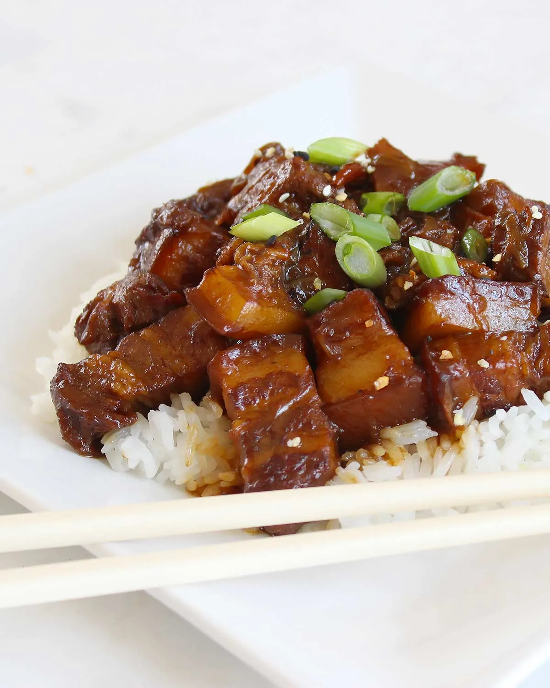

Top 3 Food in Hangzhou
Braised Pork in Brown Sauce (Lazi Rou)

Introduction
Braised Pork in Brown Sauce—known locally as "Lazi Rou"—is a classic Shandong dish and a staple in Jinan households. It’s made with fatty pork belly (with skin on) braised slowly in a sauce of soy sauce, rice wine, sugar, and star anise. The result is melt-in-your-mouth pork: the skin is tender, the fat is silky (not greasy), and the meat soaks up the rich, caramelized sauce.In Jinan, Lazi Rou is often served with "mantou" (steamed buns) or "mianpian" (wide wheat noodles)—the sauce is perfect for dipping or pouring over carbs. What makes Jinan’s version unique is the use of local "Jinan Soy Sauce," which has a deeper, sweeter flavor than regular soy sauce. It’s a hearty dish, ideal for cold winter days, and is often served at family gatherings and festivals.
Taste
Pork Skin: Tender and chewy, coated in a glossy, sweet-savory sauce.
Fat Layer: Silky and melt-in-your-mouth—braising breaks down the fat, so it doesn’t feel heavy.
Meat: Tender but not stringy, with a rich, umami flavor from the sauce.
Sauce: Thick and caramelized, with hints of star anise and rice wine—perfect for dipping mantou.
Price
Home-Style Restaurants: 38–58 CNY/serving (generous portion, enough for 2–3 people).
Local Eateries near Daming Lake: 45–68 CNY/serving (uses high-quality pork belly, often with extra star anise for aroma).
Street Food Stalls (Simplified Version): 25–35 CNY/small portion (sliced pork, less braising time).
Millet Congee with Preserved Eggs and Pork（pidan）

Introduction
Millet Congee with Preserved Eggs and Pork—locally called "Jidan Zhou"—is Jinan’s iconic breakfast dish, beloved for its warmth and comforting flavor. It’s made with creamy millet porridge (a staple in Shandong, known for its nutty taste and health benefits) topped with diced preserved eggs (also called "thousand-year eggs"), minced pork, and chopped scallions.The combination of ingredients balances textures and tastes: the smooth, mild congee contrasts with the salty-savory preserved eggs and tender pork, while scallions add a fresh kick. In Jinan, you’ll find this dish at every breakfast shop—locals eat it piping hot, often pairing it with crispy fried dough sticks ("youtiao") for extra crunch. It’s especially popular in winter, as the warm congee chases away the cold.
Taste
Millet Congee: Creamy, smooth, and slightly nutty—cooked slowly to a thick consistency that coats the spoon.
Preserved Eggs: Salty with a subtle earthy flavor, and a soft, jelly-like texture (not as pungent as some preserved foods).
Overall Balance: The mild congee tones down the saltiness of the preserved eggs, while the pork and scallions add layers of flavor.
Price
Breakfast Shops: 8–12 CNY/bowl (includes a small portion of youtiao).
Local Eateries: 10–15 CNY/bowl (larger portion, more pork and preserved eggs).
Street Food Carts: 6–8 CNY/bowl (simpler version, less topping).
Fried Tofu with Spicy Sauce (La Jiao Dou Fu)

Introduction
Fried Tofu with Spicy Sauce—"La Jiao Dou Fu" in Jinan dialect—is a popular street food and side dish, known for its crispy exterior, soft interior, and bold spicy flavor. It’s made with firm tofu cut into small cubes, deep-fried till golden and crunchy, then tossed in a spicy sauce made with chili oil, soy sauce, vinegar, and garlic.In Jinan, vendors sell this dish from small carts—they fry the tofu fresh to order, so it’s always hot and crispy. The sauce is the star: it’s spicy but not overpowering, with a tangy kick from vinegar and a savory base from soy sauce. Some vendors add sesame seeds or chopped cilantro for extra texture. It’s a cheap, filling snack—perfect for eating on the go while exploring the city’s springs or lakes.
Taste
Tofu Exterior: Golden, crispy, and slightly oily (in a satisfying way)—the frying creates a crunchy shell that holds the sauce.
Tofu Interior: Soft, tender, and porous—soaks up the spicy sauce, making every bite flavorful.
Spicy Sauce: Bold and zesty—chili oil adds heat, vinegar adds tang, and garlic adds depth. It’s balanced, not overly spicy.
Price
Street Vendors: 5–8 CNY/small portion (enough for a snack); 10–15 CNY/large portion (shares for 2 people).
Side Dish at Restaurants: 18–28 CNY/serving (larger portion, fancier presentation).
Add-Ons: Extra chili sauce (+1 CNY), sesame seeds (+1 CNY).